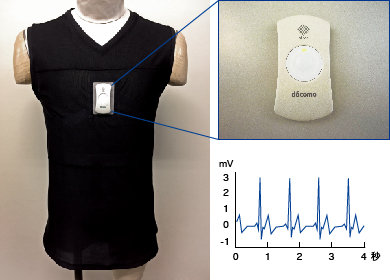
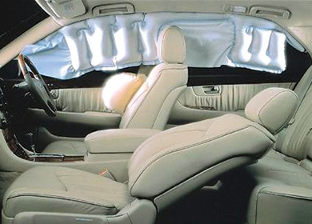

繊維関連技術部署
繊維関連技術部署は、東レの基幹事業である繊維において、成長領域（サステナビリティイノベーション事業）での事業拡大や大手SPAとの取り組み強化に向けた新製品・新技術開発、先端材料の創出を推進しており、国内外の研究、開発、生産、エンジニアリング部署との連携により、スピーディかつ効率的な開発を進めています。繊維技術開発に関わる重合、製糸、高次加工、縫製品まで一貫して開発を手がけることにより、市場が求める高機能・高質感な素材・製品を創出し、グローバルな事業展開を支えています。
- ■フィラメント技術部
- ■ステープル技術部
- ■産業用フィラメント技術部
- ■不織布技術部
原糸・原綿については、フィラメント（長繊維）、ステープル（短繊維）、不織布等の形態や、衣料・産業資材等の用途に応じてさまざまな素材開発を行うとともに、ベースとなる要素技術の深化を図っています。
- ■テキスタイル・機能資材開発センタ－
- ■繊維加工技術部
高次加工では、衣料向け感性・機能テキスタイルや産業資材向け特殊機能テキスタイルなどを中心に、紡績、糸加工、織布、編成、不織布、染色、機能加工から縫製、評価技術にわたる幅広い技術を駆使した新製品、新技術開発に取り組んでいます。

生体信号を高感度に検出できる機能素材hitoe®を使用したウェア、および小型専用端末、心電波形の測定例
※hitoe®は医療機器ではありません

高強度ナイロン66繊維が使用された側面衝突対応のサイドエアバッグとカーテンエアバッグ
地球上のさまざまな気象環境が再現できる人工気象室テクノラマGⅢ